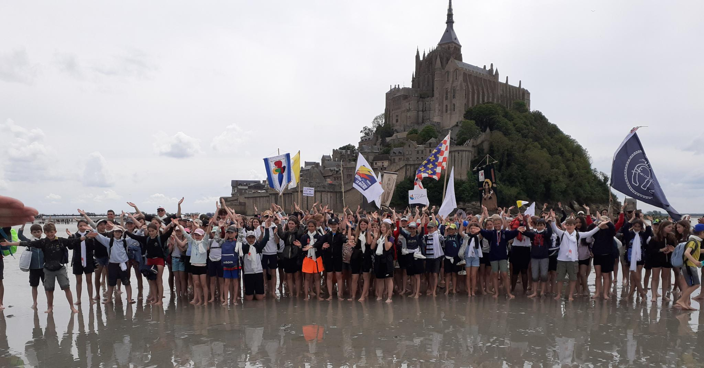
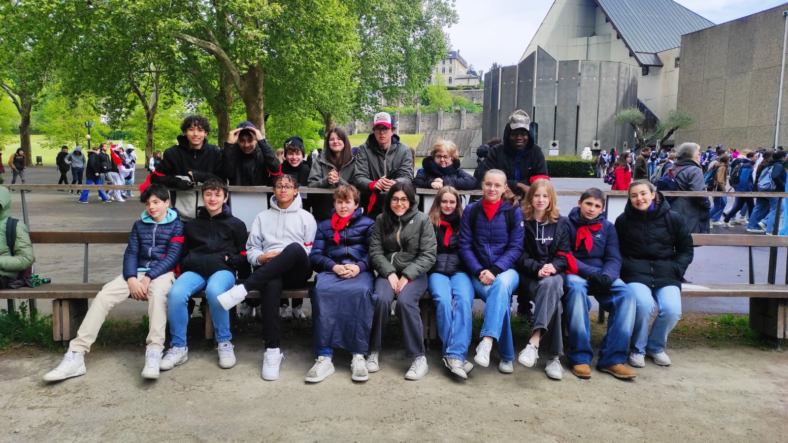
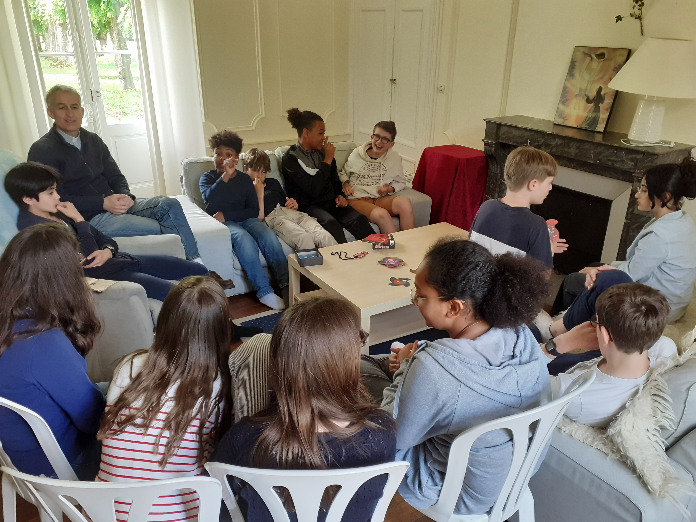
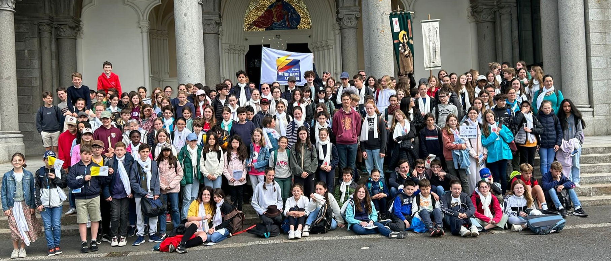
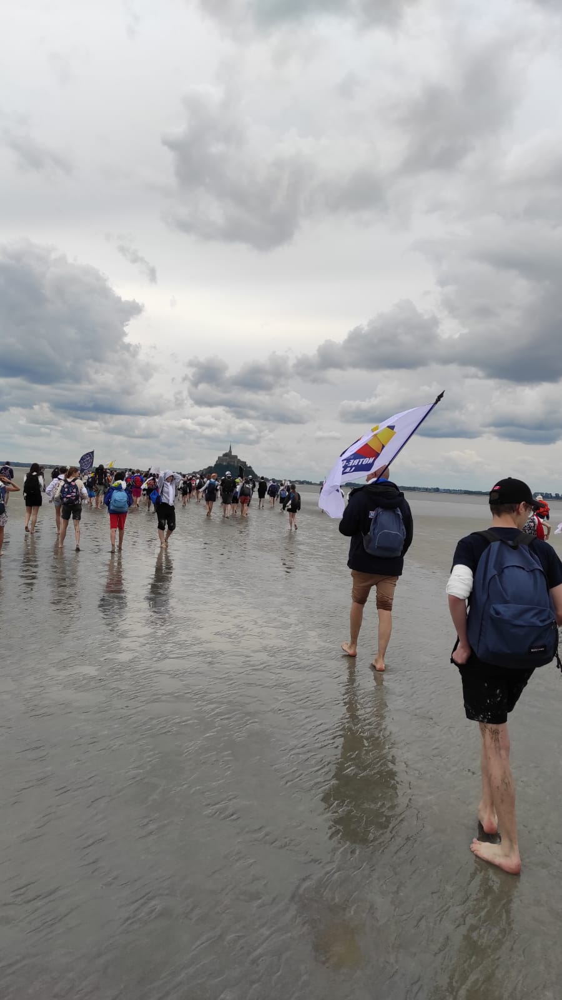

Actualités pastorales Mai 2024 : Pèlerinage, Retraites et Préparation au Baptême
Avril/Mai 2024
Découvrez les dernières actualités de la pastorale scolaire Notre-Dame La Riche
Pèlerinage à Lourdes
Du 22 au 25 avril 2024, plus de 200 jeunes du diocèse et animateurs originaires de Touraine ont vécu le pèlerinage diocésain des jeunes à Lourdes. Parmi eux, 16 pèlerins des classes de 3ème et de seconde de l'Institution Notre-Dame la Riche, accompagnés de 4 encadrants, ont participé à cette expérience inoubliable. Ce pèlerinage a été marqué par la joie, la paix et de nouvelles amitiés, laissant des souvenirs impérissables.

Retraite de la Profession de Foi à l'Île Bouchard
La retraite de la profession de foi est une étape cruciale pour les jeunes, les aidant à prendre conscience de leur appartenance à l'Église et de leur vocation à témoigner de leur foi. Organisée par Isabelle Brunet, animatrice en pastorale, et le Père Henry de Presle, prêtre référent, la retraite s'est déroulée du 22 au 24 mai 2024 au château de Marigny, à l'Île Bouchard. Les 12 jeunes présents, accompagnés de 3 encadrants, ont vécu trois jours intenses de prières, chants, jeux, explications du Credo, sacrement du pardon et célébrations. Le 25 mai, à l'église Notre-Dame la Riche, ces jeunes ont professé leur foi lors d'une messe en présence de leurs familles et de la communauté.


Pèlerinage au Mont Saint-Michel/Pontmain
Du 24 au 26 mai 2024, 200 pèlerins, dont 16 collégiens de l'Institution Notre-Dame la Riche, ont participé au pèlerinage diocésain des 6èmes, 5èmes et 4èmes vers le Mont Saint-Michel et Pontmain. Ce pèlerinage a été une véritable aventure, avec des marches de 9 à 10 kilomètres dans la vase et l'eau, des montées et des descentes d'escaliers, le tout sous une belle météo. Une expérience extraordinaire pour tous les participants.
Retrouvez la vidéo du pélérinage Ici 
Préparation au Baptême
Dix jeunes de l'Institution Notre-Dame la Riche, issus du collège et du lycée, se préparent à recevoir le sacrement du baptême. Depuis le début de l'année, ils sont accompagnés par Katia Chavalle, animatrice en pastorale, et Cédric Galoyer, adjoint en pastorale. Se réunissant une fois par mois, ces jeunes recevront le baptême lors de la vigile pascale en 2025, marquant une étape importante dans leur cheminement de foi.
Ces événements témoignent de la vitalité et de l'engagement de l'Institution Notre-Dame la Riche dans la formation spirituelle et humaine de ses jeunes. Bravo à tous pour leur participation et leur dévouement !
Découvrir Notre Dame La Riche...

L'institution
Ancrée au centre de la ville de Tours, l’Institution Notre-Dame La Riche œuvre depuis des décennies à l’épanouissement des jeunes de la maternelle à l’enseignement supérieur...

Internat
Un cadre de vie et de travail en plein coeur de la ville de Tours dans lequel est privilégié l'apprentissage à l'autonomie et le vivre ensemble...

Une école hôtelière
L’école hôtelière de Notre Dame La Riche forme les étudiants, avec l'appui d'un restaurant pédagogique, dans trois filières de l’hôtellerie et de la restauration : la cuisine, le service et l’hébergement…